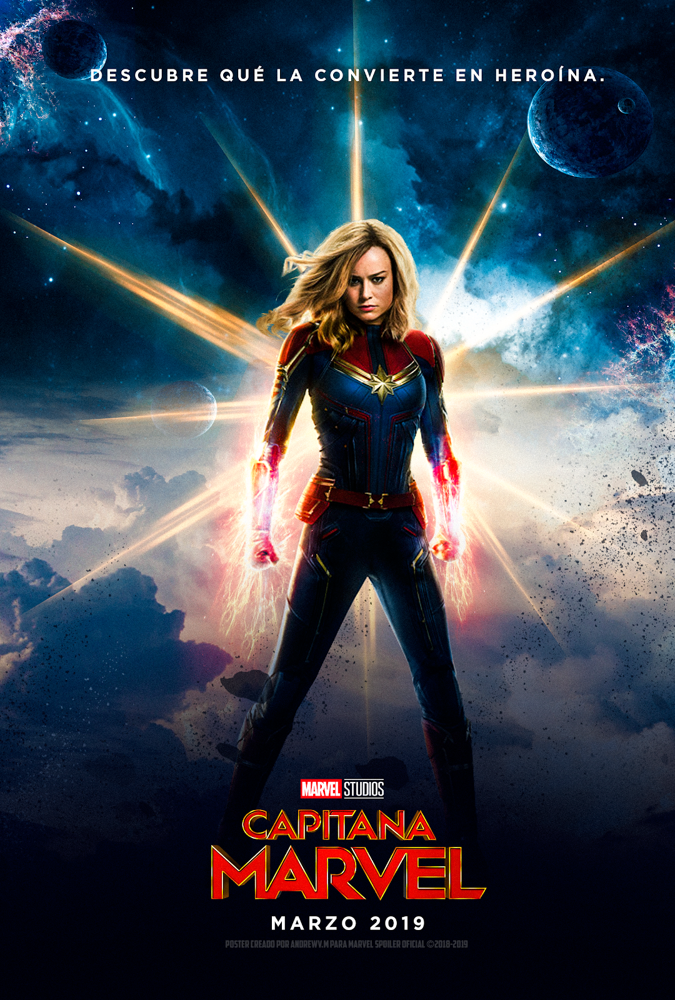

|  |
Movie Name: |
Captain Marvel (2018) |
|
In 1995, on the Kree Empire's capital planet of Hala, Starforce member Vers suffers from amnesia and recurring nightmares involving an older woman. Yon-Rogg, her mentor and commander, trains her to control her abilities while the Supreme Intelligence, the artificial intelligence that rules the Kree, urges her to keep her emotions in check. During a mission to rescue an undercover operative infiltrating a group of Skrulls, alien shapeshifters with whom the Kree are at war, Vers is captured by Skrull commander Talos. A probe of Vers's memories leads them to Earth. Vers escapes and crash-lands in Los Angeles. Her presence attracts S.H.I.E.L.D. agents Nick Fury and Phil Coulson, whose investigation is interrupted by a Skrull attack. In the ensuing chase, Vers recovers a crystal containing her extracted memories while Fury kills a Skrull impersonating Coulson. Talos, disguised as Fury's boss Keller, orders Fury to work with Vers and keep tabs on her. Using her extracted memories, Vers and Fury go to the Project Pegasus installation at a U.S. Air Force base. They discover Vers was a pilot presumed to have died in 1989 while testing an experimental light-speed engine designed by Dr. Wendy Lawson, whom Vers recognizes as the woman from her nightmares. After Fury informs S.H.I.E.L.D. of their location, a team led by Talos disguised as Keller arrives. Fury discovers Talos's ruse and helps Vers escape in a cargo jet with Lawson's stowaway cat Goose. They fly to Louisiana to meet former pilot Maria Rambeau, the last person to see Vers and Lawson alive. Rambeau and her daughter Monica reveal that Vers is Carol Danvers, who was once like family to them. Talos, arriving unarmed, explains that the Skrulls are refugees searching for a new home and that Lawson was Mar-Vell, a renegade Kree scientist helping them. Talos plays a recovered recording from Lawson's jet, prompting Danvers to remember the crash: Lawson was killed by Yon-Rogg to prevent her from destroying the engine before the Kree could recover it. Destroying the engine herself, Danvers absorbed the energy from the ensuing explosion, gaining powers but losing her memory. Danvers, Talos, Fury, and Rambeau locate Lawson's cloaked laboratory orbiting Earth, where Lawson hid several Skrulls, including Talos's family, and the Tesseract, the power source of Lawson's engine. There, Danvers is captured by Starforce and interfaces with the Supreme Intelligence. During their conversation, Danvers removes the Kree implant that was suppressing her powers, allowing her to reach her full potential. In the subsequent battle, Fury retrieves Goose, who is revealed to be an alien Flerken. Goose swallows the Tesseract and scratches Fury, blinding his left eye. Danvers destroys a Kree bomber, forcing Kree officer Ronan the Accuser and his squadron to retreat, before overpowering Yon-Rogg on Earth and sending him back to Hala with a warning to the Supreme Intelligence. Danvers departs to help the Skrulls find a new homeworld, leaving Fury a modified pager to contact her in an emergency. Meanwhile, Fury drafts an initiative to locate heroes like Danvers, naming it after her Air Force call sign, "Avenger". In a mid-credits scene, set in 2018, the activated pager is being monitored by the Avengers when Danvers appears. In a post-credits scene, Goose climbs onto Fury's desk and regurgitates the Tesseract. |
||